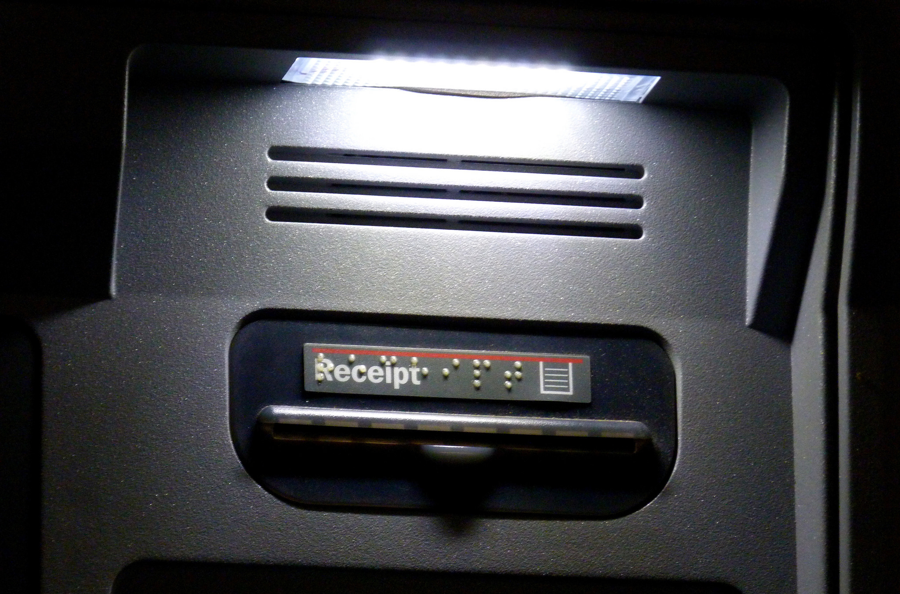

Future Opportunities
Ultimately, Stockgrok is a proof of concept and there is room to iterate and improve on the existing interface. For example, we could do more work with sound design, as some users reported the pitch and timbre differences to be not obvious enough. We have designed for customizability, given the uniqueness of people’s workflows, but have not yet integrated the ability for users to customize their keyboard shortcuts for Stockgrok. Finally, we’d like to add more time and range control for examining security data at different levels, instead of only looking at daily price values. We also see opportunities to add more useful features to Stockgrok. For example, this prototype only uses a 50-day simple moving average as a technical indicator, when in reality, it is just one of many such comparisons within technical analysis.
Have ideas about how we can make it better? Contact Emily at essaltz[at]gmail.com.
While currently only sonifying simple moving average and price, this system of sonifying key cues about the difference between lines could be applied anytime a person with visual impairment needs to compare multiple lines on a chart. Because Stokgrok is fully compatible with traditional visual charts, it serves as an example of a system that could be built into existing platforms. If a system like Stokgrok were available on the Bloomberg Terminal, for example, it would allow both people who are sighted and visually impaired to collaborate and reference the same crucial data cues. Stokgrok offers a vision of expert financial analysis that is both usable and universally inclusive.
